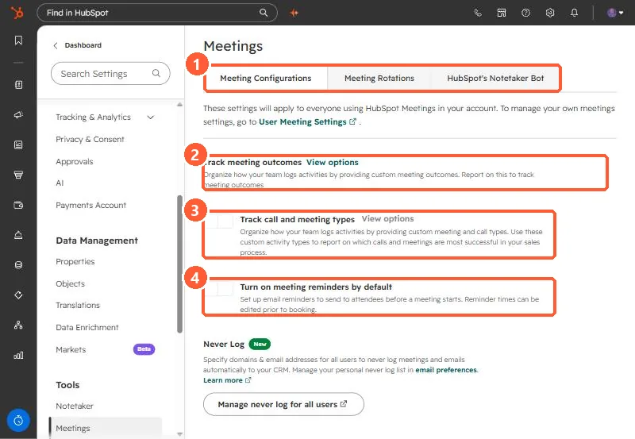

Short answer
In Settings, Meetings, the Meeting Configurations tab has Track meeting outcomes, Track call and meeting types, and Turn on meeting reminders by default. HubSpot allows up to 30 custom call outcomes and 30 custom meeting outcomes, each up to 50 characters, and you cannot edit an outcome after saving it. Types let you separate, say, discovery calls from demos. Types are off in my demo.
1. Meeting Configurations
Open Meetings settings. The page says these apply to everyone using Meetings, and links to your own user meeting settings.


2. Outcomes
- Up to 30 custom call outcomes and 30 custom meeting outcomes, 50 characters each.
- Outcomes cannot be edited after saving, because edits could affect reporting. Deleting one removes it from segments and workflows.
- Custom outcomes can be used as filters in workflows and segments.
3. Types and reminders
- Reps pick a type when they log a call or meeting, or when scheduling. Creating types needs Super Admin.
- On Professional or Enterprise, custom reports can filter by call and meeting type.
- Default reminders send email reminders to attendees before a meeting.
Further down the page is the Never Log list. See the never log list.